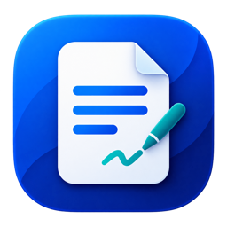

Edit the essentials.
Change text, adjust formatting, and add bullets. Familiar tools for the small jobs that bring you to a Word file.

FreeDocxA free .docx editor for Mac
Fix a typo. Update your résumé. Change a few lines. FreeDocx lets you make those quick edits on your Mac, without paying for Microsoft Word.
Free to use No account needed
Made for the occasional editFor the times you just need to fix something
Change text, adjust formatting, and add bullets. Familiar tools for the small jobs that bring you to a Word file.
Open a Word file on your Mac and save your changes back to it. Keep the file in the folder where it belongs.
Edit locally, with no account or upload required. Keep FreeDocx handy for the next time someone sends you a document.
For the edits between chats
Drafting a Word document with ChatGPT? Open the file in FreeDocx for the sentence you’d rather rewrite yourself, or the detail only you can add.
Keep working on the same document.
When your assistant can edit files on your Mac, you can take turns on the same saved .docx.
How this worksSave and close. Hand it back. Keep going.
Before you download
No. FreeDocx is a standalone Mac app. You don’t need Microsoft Word installed or a Microsoft subscription to use it. FreeDocx is free and open source.
FreeDocx is built for text, basic formatting, and simple lists in .docx files. Editing complex tables, tracked changes, and headers or footers isn’t available. Older .doc files aren’t supported.
FreeDocx edits Word files saved on your Mac. If your assistant can access those files, you can take turns editing the same document. Save and close it before the assistant makes changes, then reopen it in FreeDocx. FreeDocx doesn’t include an AI connection or live syncing.
FreeDocx is made for Macs running macOS 26.5 or later.
FreeDocx for Mac. Free and open source.
Requires macOS 26.5 or later